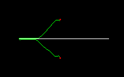

A star (A*) is a path-finding algorithm that finds a short path between two objects. For binary images, we assume that unset pixels are walls and inaccessible whilst set pixels are clear and all have the same cost of movement. You can modify the function to have variable cost of movement dependent on terrain type, but then it is no longer a binary image algorithm.
It works by expanding two search balloons round A and B. When the balloons meet, we have found a path - not necessarily the shortest path, but a short path. We tag the points in the ballons with a cost, and keep them in a priority queue. At each step, we take the lowest cost item from the queue, search for unset and unvisited pixels round it, and add to the queue.
If we make cost a strict distance from the start / end points, the search is a brute force shortest path through a graph problem. The "star" comes in because, if the number of walls is not ridiculously high, the shortest path will likely be roughly a straight line between A and B. So we expand the balloons preferably in that general direction, and only start looking at convoluted paths when we cannot find a direct one.
So each point has a cost (the cost of travel from A or B to the endpoint) and a heuristic, which is the diagonal distance to the target. Diagonal distance is the distance assuming steps are restricted to straight steps or one-pixel diagonal steps, but disallowing knight's move or higher steps. We weight the cost and the heuristic equally when putting points in the priority queue.
To allow efficient traceback we tag each visited pixel with the ballon from which it was was visited, and the direction back to the home point. Then it is necessary to reverse to reconstruct the path.
Here's how it did on a simple test problem. The path is pretty reasonable.
Code: astar.c
void astartest(void)
{
unsigned char *maze = 0;
int width = 207;
int height = 128;
int i;
int N;
int *pathx, *pathy;
unsigned char pal[4 * 3] = {
255, 255, 255,
0, 0, 0,
0, 255, 0,
255, 0, 0 };
int sx = 100;
int sy = 96;
int ex = 100;
int ey = 32;
maze = malloc(width * height);
memset(maze, 1, width * height);
for (i = 0; i < 150; i++)
{
maze[64 * width + i + 32] = 0;
}
N = astar(maze, width, height, sx, sy, ex, ey, &pathx, &pathy);
if(N < 0)
/* out of memory */;
for (i = 0; i < N; i++)
maze[pathy[i] * width + pathx[i]] = 2;
maze[sy*width + sx] = 3;
maze[sy*width + sx+1] = 3;
maze[sy*width + sx-1] = 3;
maze[(sy+1)*width + sx] = 3;
maze[(sy-1)*width + sx] = 3;
maze[ey*width + ex] = 3;
maze[ey*width + ex+1] = 3;
maze[ey*width + ex-1] = 3;
maze[(ey+1)*width + ex] = 3;
maze[(ey-1)*width + ex] = 3;
savegif("maze.gif", maze, width, height, pal, 4, -1, 0, 0);
free(maze);
free(pathx);
free(pathy)
}
We gratefully acknowledge the help of Richard Heathfield in providing the heap code, from his book "C Unleashed".